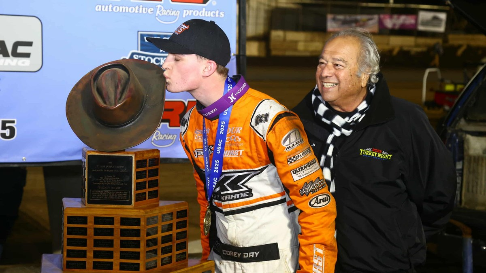

Corey Day to Run All Seven USAC Golden State Invasion Midget Events
The Clovis, California, driver will contest the full November USAC NOS Energy Drink National Midget west-coast swing in Willie Kahne’s FK4, beginning with the Hangtown 100 at Placerville.

Corey Day will compete in all seven USAC NOS Energy Drink National Midget Championship events that make up this month’s Golden State Invasion. Day will drive Willie Kahne’s FK4 for the California swing, according to USAC Racing.
The Golden State Invasion opens Nov. 13-14 with the Hangtown 100 at Placerville Speedway. Plaza Park Raceway hosts the series Nov. 18. The Chase Johnson Classic runs two nights at Merced Speedway on Nov. 20-21. The Jason Leffler Memorial follows Nov. 24 at Bakersfield Speedway. The season ends Nov. 28 with the Turkey Night Grand Prix at Ventura Raceway.
Day is the two-time and defending Turkey Night Grand Prix champion at Ventura, winning back-to-back in 2024 and 2025 with Kahne. He also has a USAC National Midget win at Merced, taking a Midget Madness feature there on Nov. 24, 2024.